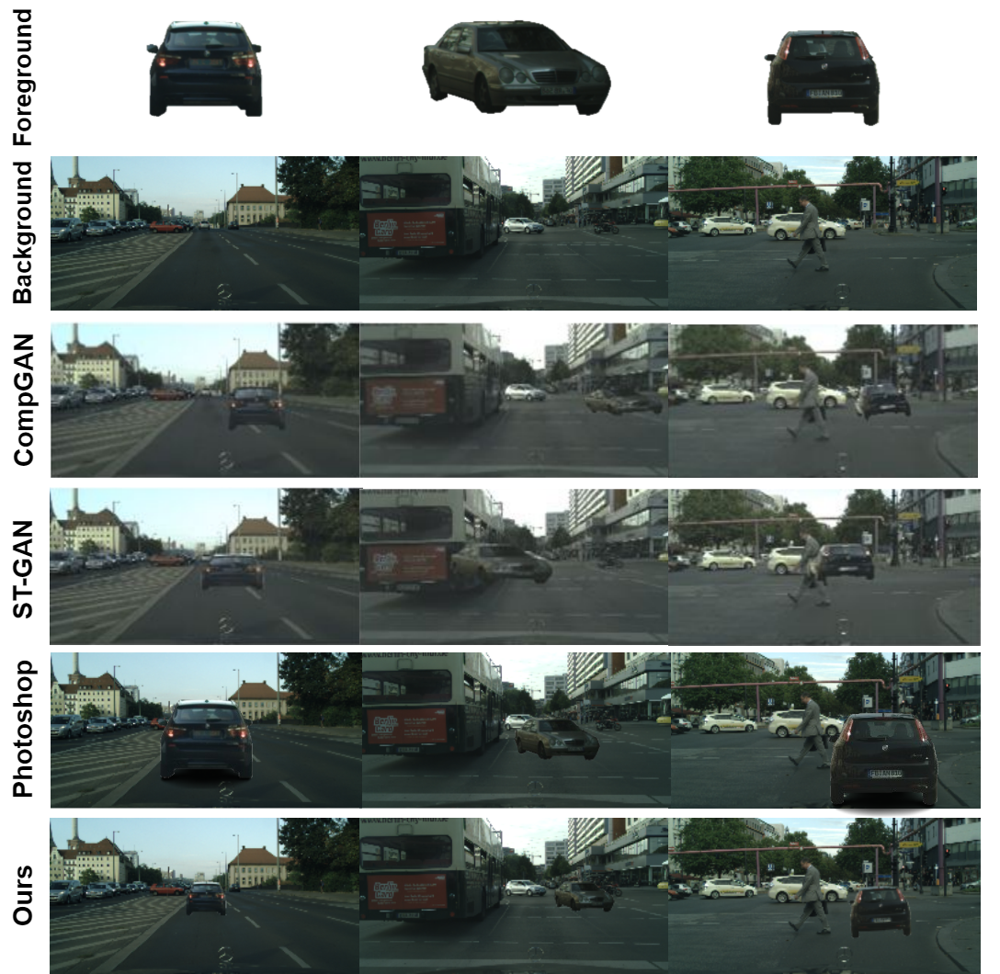
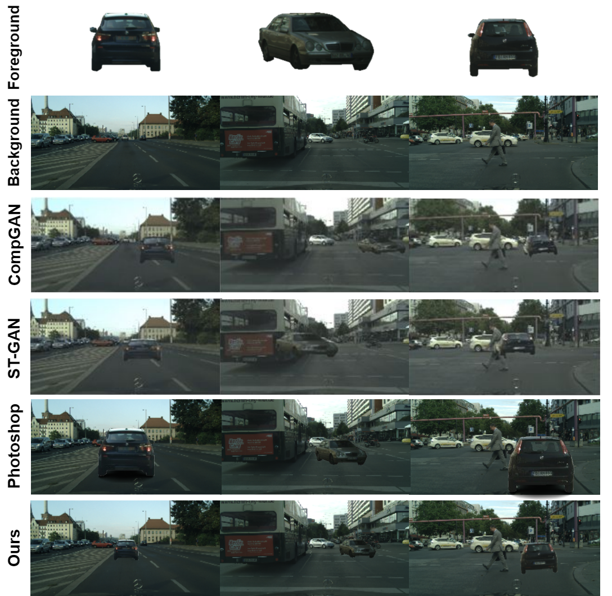

Car-Street Compositions
DepGAN allows you to seamlessly combine cars with various street scenes, creating realistic composite images from real-world data.



Image composition is a complex task which requires a lot of information about the scene for an accurate and realistic composition, such as perspective, lighting, shadows, occlusions, and object interactions. Previous methods have predominantly used 2D information for image composition, neglecting the potentials of 3D spatial information. In this work, we propose DepGAN, a Generative Adversarial Network that utilizes depth maps and alpha channels to rectify inaccurate occlusions and enhance transparency effects in image composition. Central to our network is a novel loss function called Depth Aware Loss which quantifies the pixel wise depth difference to accurately delineate occlusion boundaries while compositing objects at different depth levels. Furthermore, we enhance our network's learning process by utilizing opacity data, enabling it to effectively manage compositions involving transparent and semi-transparent objects. We tested our model against state-of-the-art image composition GANs on benchmark (both real and synthetic) datasets. The results reveal that DepGAN significantly outperforms existing methods in terms of accuracy of object placement semantics, transparency and occlusion handling, both visually and quantitatively.
DepGAN allows you to seamlessly combine cars with various street scenes, creating realistic composite images from real-world data.
DepGAN enables you to add glasses to faces effortlessly, producing natural-looking images with the added accessories. It will also take care of occlusions and transparency for you!
We utilize depth aware loss which considers depth information along-side the input images, enabling the generator to produce outputs that accurately reflect the structural characteristics of the scene. Firstly, we extract the depth map from the ground truth image, and create binary mask based on a threshold value. Depth pixels with values above the threshold are set to 1, and values below are set to 0. This mask is then applied to the predicted and ground truth im- ages, effectively zeroing out the regions where the depth is below the threshold.
@article{ghoneim2024depgan,
author = {Ghoneim, Amr and Poovvancheri, Jiju and Akiyama, Yasushi and Chen, Dong},
title = {DepGAN: Leveraging Depth Maps for Handling Occlusions and Transparency in Image Composition},
year = {2024},
}